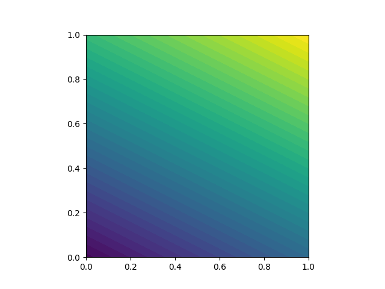

Chapter 3: A Gallery of finite element solvers¶
The goal of this chapter is to demonstrate how a range of important PDEs from science and engineering can be quickly solved with a few lines of FEniCS code. We start with the heat equation and continue with a nonlinear Poisson equation, the equations for linear elasticity, the Navier–Stokes equations, and finally look at how to solve systems of nonlinear advection–diffusion–reaction equations. These problems illustrate how to solve time-dependent problems, nonlinear problems, vector-valued problems, and systems of PDEs. For each problem, we derive the variational formulation and express the problem in Python in a way that closely resembles the mathematics.
3.1 The Heat Equation¶
As our first extension of the Poisson problem, we consider the time-dependent heat equation, or the time-dependent diffusion equation.
The PDE problem:¶
Our model problem for time-dependent PDEs reads
Here, \(u\) varies with space and time. The source functiona nd the boundary values may also vary with space and time. The initial condition \(u_0\) is a function of space only.
Variational Formulation¶
A straightforward approach to solving time-dependent PDEs by the finite element method is to first discretize the time derivative by a finite difference approximation, which yields a sequence of stationary problems, and then in turn each stationary problem into a variational formulation.
Let superscript \(n\) denote a quantity at time \(t_n\) where \(n\) is an integer counting time levels. For example, \(u^n\) means \(u\) at time level \(n\). A finite difference discretization in time first consists of samling the PDE at some level, say \(t_{n+1}\):
The time-derivative can be approximated by a difference quotient. For simplicity and stability reasons, we choose a simple backward difference:
where \(\Delta t\) is the time discretization parameter. Combining these two expressions we get
This is our time-discrete version of the heat equation, a so-called backward Euler or “implicit Euler” discretization.
We may reorder so that the LHS contains the terms with the unknown \(u^{n+1}\) and the RHS contains computed terms only. The result is a sequence of spatial (stationary) problems for \(u^{n+1}\), assuming \(u^{n}\) is known from the previous time step:
Given \(u_0\) we can solve for \(u^0\), \(u^1\), \(u^2\), and so on.
An alternative which can be convenient in implementations is to collect all terms on one side of the equality sign:
We use a finite element method to solve \(u^{0} = u_0\) and either of the above expressions. This requires turning the equations into weak forms. As usual we multiply by a test function \(v \in \hat{V}\) and integrate second-derivatives by parts. Introducing the symbol \(u\) for \(u^{n+1}\) (which is natural in code), the resulting weak form can be conveniently written in the standard notation:
where
In addition to the variational problem to be solved in each time step, we also need to approximate the initial condition. This equation can also be turned into a variational problem:
with
When solving this variational problem, \(u^0\) becomes the \(L^2\) projection of the initial value \(u_0\) into the finite element space. The alternative is to construct \(u^0\) by just interpolating the initial value \(u_0\); that is, if \(u^0 = \sum ^N _{j = 1} U{_j}{^0}\phi_j\) we simply set \(U_j = u_0(x_j, y_j)\) where \((x_j, y_j)\) are the coordinates of node number \(j\).
We refer to these two strategies as computing the initial condition by either “projection” or “interpolation”. Both operations are easy to compute in FEniCS through a single statement, using either project or interpolate function. The most common choice is project which computes an approximation to \(u_0\), but in some applications where we want to verify the code by reproducing exact solutions, one must use interpolate (and we use such a test problem here!)
In summary, we thus need to solve the following sequence of variational problems to compute the finite element solution to the heat equation: find \(u^0 \in V\) such that \(a_0(u^0, v) = L_0(v)\) holds for all \(v \in \hat{V}\), and then find \(u^{n+1} \in V\) such that \(a(u^{n+1}, v) = L_{n+1} (v)\) for all \(v \in \hat{V}\), or alternatively, \(F_{n+1}(u^{n+1}, v) = 0\) for all \(v \in \hat{V}\), for \(n = 0, 1, 2, \ldots\)
-
class
ch3.heat_equation.ATestProblem(n_s=300, T=2.0, alpha=3, beta=1.2, steps=40) Just as for the Poisson problem from the previous chapter, we construct a test problem that makes it easy to determine if the calculations are correct. Since we know that our first-order time-stepping scheme is exact for linear functions, we create a test problem which has linear variation in time. We combine this with a quadratic variation in space:
\[u = 1 + x^2 + \alpha y^2 + \beta t\]which yields a function whose computed values at the nodes will be exact, regardless of the size of the elements and \(\Delta t\), as long as the mesh is uniformly partitioned. By inserting ^ into the heat equation, we find that the RHS \(f\) must be given by \(f(x, y, t) = \beta - 2 - 2 \alpha\). The boundary value is \(u_D(x, y, t) = 1 + x^2 + \alpha y^2 + \beta t\) and the initial value is \(u_0(x, y) = 1 + x^2 + \alpha y^2\).
A new issue is how to deal with functions that vary in both space and time, such as our boundary condition here \(u_D(x, y, t) = 1 + x^2 + \alpha y^2 + \beta t\). A natural solution is to use a FEniCS
Expressionwith time t as a parameter, in additional to the physical parameters:alpha = 3; beta = 1.2 u_D = Expression('1 + x[0]*x[0] + alpha*x[1]*x[1] + beta*t', degree=2, alpha=alpha, beta=beta, t=0)
We use the variable
ufor the unknown \(u^{n+1}\) at the new time step and the variableu_nfor \(u^n\) at the previous time step. The initial value ofu_ncan be computed by either projection or interpolation of \(u_0\). Since we sett = 0for the boundary valueu_D, we can useu_Dto specify the initial condition:u_n = project(u_D, V) # or u_n = interpolate(u_D, V)
We can either define \(a\) or \(L\) according to the formulas we have above, or we may just define \(F\) and ask FEniCS to figure out which terms should go into the bilinear form \(a\) and which should go into the linear form \(L\). The latter is convenient, especially in more complicated problems, so we illustrate that construction of \(a\) and \(L\):
u = TrialFunction(V) v = TestFunction(V) f = Constant(0) F = u * v * dx + dt * dot(grad(u), grad(v)) * dx - (u_n + dt * f) * v * dx a, L = lhs(F), rhs(F)
Finally, we can perform the time-stepping in a loop
fid = File("test_problem/solution.pvd") u = Function(V) t = 0 for n in range(num_steps): # Update current time t += dt u_D.t = t # Compute solution solve(a == L, u, bc) fid << u, t u_n.assign(u)
-
class
ch3.heat_equation.BHeatEquation(n_s=300, T=2.0, a=5, steps=40) Thermal diffusion of a Gaussian fuction. We’d like to solve for the thermal diffusion of the following gaussian initial temperature distribution:
\[u_0(x, y) = e^{-ax^2 -ay^2}\]with \(a = 5\) on the domain \([-2, 2] \times [2, 2]\). For this problem we will use homogeneous Dirichlet boundary conditions (\(u_D = 0\)).
The major changes required from our previous problem are: we now have a rectangular domain that isn’t the unit square, so we use
RectangleMesh:nx = ny = 30 mesh = RectangleMesh(Point(-2, -2), Point(2, 2), nx, ny)
Note that we have used a much higher resolution than before to better resolve the features of the solution. We also need to define the initial condition and boundary condition. Both are easily changed by adding a new
Expressionand by setting \(u = 0\) on the boundary.
3.2: A Nonlinear Poisson Equation¶
We now try to address how to solve nonlinear PDEs. By defining a nonlinear variational problem and calling the solve function, they become just as easy as the linear ones. When we do so, we encounter a subtle difference in how the variational problem is defined.
Model Problem
As a model problem for the solution of nonlinear PDEs, we take the following nonlinear Poisson equation:
in \(\Omega\) with \(u = u_D\) on the boundary \(\partial \Omega\). The coefficient \(q = q(u)\) makes the equation nonlinear (unless \(q(u)\) is constant in \(u\)).
Variational Formulation
As usual, we multiply our PDE by a test function \(v \in \hat{V}\), integrate over the domain, and integrate the second-order derivatives by parts. The boundary integral arising from integration by parts vanishes wherever we employ Dirichlet conditions. The resulting variational formulation of our model problem becomes: find \(u \in V\) such that
where
and
The discrete problem arises as usual by restricting \(V\) and \(\hat{V}\) to a pair of discrete spaces. As before, we omit any subscript on the discrete spaces and discrete solution. The discrete nonlinear problem is written as: find \(u \in V\) such that
with \(u = \sum_{j=1}^N U_j \phi_j\). Since \(F\) is nonlinear in \(u\), the variational statement gives rise to a system of nonlinear algebraic equations in the unknowns \(U_1, \ldots ,U_N\).
-
class
ch3.nonlinear_pdes.ANonlinearTest(n_s=8) For a nonlinear test problem, we need to choose the right-hand side \(f\), the coefficient \(q(u)\) and the boundary value \(u_D\). Previously we have worked with manufactured solutions that can be reproduced without approximation errors. This is more difficult in nonlinear problems, and the algebra is more tedious.
However we may utilize SymPy for symbolic computing and integrate such computations in the FEniCS solver. This allows us to easily experiment with different manufactured solutions. The forthcoming code with SymPy requires some basic familiarity with this package. In particular, we will use the SymPy functions
difffor symbolic differentiation andccodefor C/C++ code generation.Our test problem here is \(q(u) = 1 + u^2\), and we define a two-dimensional manufactured solution that is linear in \(x\) and \(y\).
def q(u): "Return nonlinear coefficient" return 1 + u**2 x, y = sym.symbols('x[0], x[1]') u = 1 + x + 2 * y f = -sym.diff(q(u) * sym.diff(u, x), x) - sym.diff(q(u) * sym.diff(u, y), y) f = sym.simplify(f) u_code = sym.printing.ccode(u) f_code = sym.printing.ccode(f)
In SymPy we might normally write
x, y = sym.symbols('x, y'), but we want the resulting expressions to have valid syntax for FEniCS expression objects, so we usex[0]andx[1].Solution to the non-linear \(q(u) = 1 + u^2\) with 8x8 spatial grid.
3.3: Linear Elasticity¶
Analysis of structures is one of the major activities of modern engineering, which likely makes the PDE modeling the deformation of elastic bodies the most popular PDE in the world. It takes just one page of code to solve the equations of 2D or 3D elasticity using FEniCS, as we show here.
PDE Problem
The equations governing small elastic deformations of a body \(\Omega\) can be written as
where \(\sigma\) is the stress tensor, \(f\) is the body force per unit volume, \(\lambda\) and \(\mu\) are Lamé’s elasticity parameters for the material in \(\Omega\), \(I\) is the identity tensor, tr is the trace operator on a tensor, \(\epsilon\) is the symmetric strain-rate tensor (symmetric gradient), and \(u\) is the displacement vector field. We have here assumed isotropic conditions.
We combine the above to obtain
We can easily obtain a single vector PDE for \(u\), which is the governing PDE for the unknown (Navier’s equation). As it turns out, for the variational formulation it is convenient to keep the equations split as above
Variational Formulation
-
class
ch3.linear_elasticity.ClampedBeam